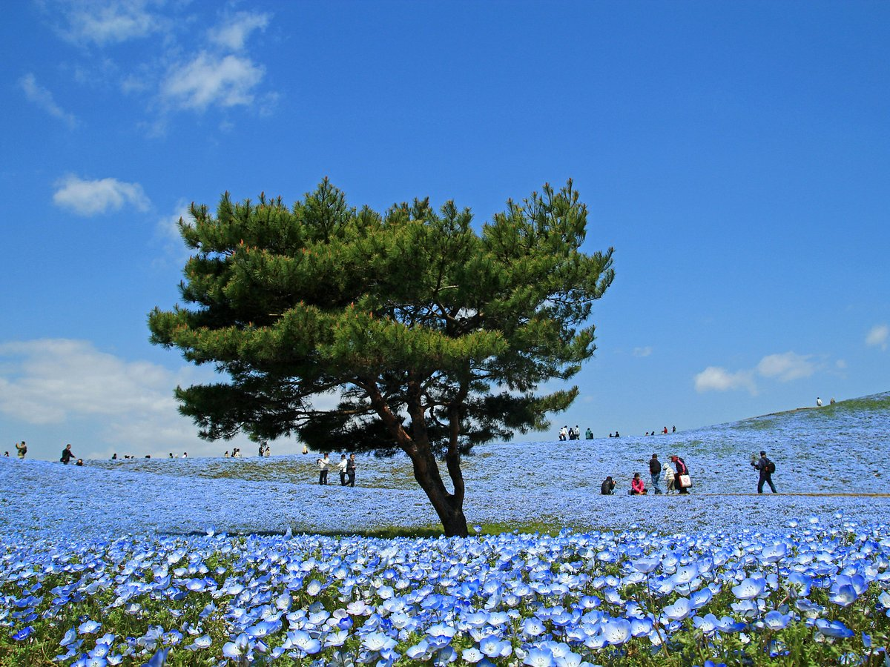

Destinos Turísticos
Conoce los lugares más impresionantes que tenemos para ti.

Universal Studios Japan
Un parque temático lleno de atracciones, mundos de películas y experiencias inolvidables para todas las edades.
Ver más
Tokyo Skyetree
El mirador más alto de Japón con vistas panoramicas increibles de la ciudad de tokio
Ver más
TeamLab Planets
Una experiencia de arte digital inmersivo donde la tecnología y la naturaleza se fusionan en un mundo interactivo
Ver más
Parque Costero Hitachi
Famoso por sus vastos campos de flores, los nemófilas azules, que crean paisajes de ensueño durante la primavera
Ver más